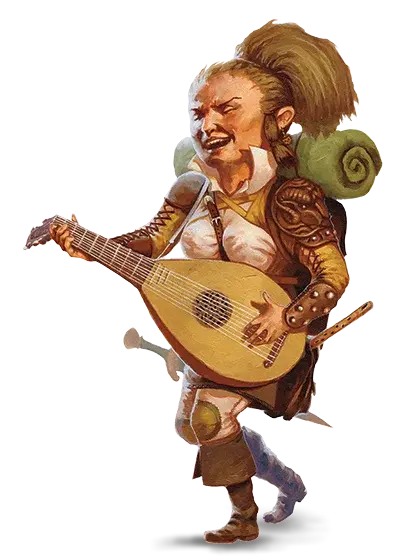

Полурослик
Halfling

Реджис, единственный полурослик на протяжении сотен миль, в какую сторону ни посмотри, сцепил ладони за головой и откинулся на густо заросший мхом ствол дерева. Реджис был чрезвычайно мал ростом даже по меркам собственного весьма миниатюрного народца. Верхние кончики волос его торчавшей во все стороны буйной гривы едва достигали трёх футов, однако живот Реджиса ясно свидетельствовал о том, что его обладатель любит съесть хороший обед, а то и несколько, смотря по обстоятельствам. Длинная кривая палка, служившая Реджису удилищем, приподнялась, чуть дрогнула, пристроилась поудобнее между мохнатыми пальцами полурослика и повисла над спокойными водами, безупречно отражаясь в зеркальной поверхности озера.
— Р. А. Сальваторе, Магический кристалл
Целью большинства полуросликов является домашний уют. Место, где можно поселиться в покое и тишине, подальше от мародёрствующих чудовищ и сражающихся армий. Огонь очага, сытная пища, добрая выпивка и добрая беседа. Хотя некоторые полурослики проживают свой век в удалённых сельских общинах, другие сбиваются в постоянно кочующие общины, влекомые открытыми дорогами, широкими горизонтами и возможностью открыть чудеса новых мест и новых людей. Но даже такие кочевники любят покой, вкусную еду, свой очаг и свой дом, даже если это повозка, трясущаяся по пыльной дороге или плот, плывущий по течению реки.
Маленькие и практичные
Крошечные полурослики выживают в мире, полном более крупных существ, стараясь избегать внимания, а если это оказывается невозможным, то избегая враждебности. Имея рост около 3 футов (90 сантиметров), они кажутся относительно безвредными, и благодаря этому успешно существуют столетиями, оставаясь в тени империй, войн и политической борьбы. Они склонны к полноте, и весят от 40 до 45 фунтов (от 18 до 20 килограмм).
Кожа у полуросликов встречается от смуглой до бледной, с румянцем. Волосы обычно коричневые или рыже-коричневые, вьющиеся. Глаза полуросликов карие или ореховые. Мужчины часто отпускают длинные бакенбарды, но бороды носят редко, а усы тем более. Они любят носить простую, удобную одежду, предпочитая яркие цвета. Практичность полуросликов распространяется не только на их одежду. Они довольствуются удовлетворением основных потребностей и простых радостей, уделяя совсем мало внимания роскоши. Даже богатейшие из них предпочитают хранить своё добро в закрытых сундуках и подвалах, а не выставлять его на всеобщее обозрение. Полурослики умеют находить простые решения своих проблем, и являются весьма решительными.
Добрые и любопытные
Полурослики — приветливый и дружелюбный народ. Они ценят дружбу и родственные связи так же как собственный дом и очаг, лишь в тайне мечтая о золоте и славе. И даже те из них, кто стали искателями приключений, обычно отправляются в путь, преследуя цели дружбы или общества, тяги к переменам или любопытства. Они любят открывать для себя что-то новое, даже если это совсем простые вещи, вроде экзотической еды или незнакомого стиля одежды.
Полурослики легко поддаются жалости, и не выносят вида чужих страданий. Они щедры, и с радостью делятся тем, что имеют, даже в трудные времена.
Единые с толпой
Полурослики легко вливаются в сообщества людей, дварфов или эльфов, где их ценят и всегда им рады. Сочетание их врождённых скрытности и скромности позволяют им легко избегать ненужного внимания.
Полурослики охотно работают с другими, и они верны своим друзьям, вне зависимости от их вида. Однако, если кто-то из их друзей, семьи или общины оказывается под угрозой, они способны проявить удивительную свирепость.
Пасторальные удовольствия
Большинство полуросликов живёт в маленьких, мирных общинах с большими фермами, среди ухоженных рощ. Они редко создают собственные королевства, и не держат земель за пределами своих тихих владений. Они обычно не признают среди себя какого-либо рода знати или королевской власти, вместо этого прислушиваясь к семейным старейшинам, руководствуясь их мнением. Семьи сохраняют свой традиционный уклад, несмотря на подъёмы и падения империй.
Множество полуросликов живёт среди других рас, где усердная работа и надёжные перспективы принесут им обильное вознаграждение и земные блага. Некоторые общины полуросликов ведут кочевой образ жизни, путешествуя на повозках или плавая на суднах от одного места к другому, не оседая на одном месте постоянно.
Приветливые и положительные
Полурослики стараются поладить с кем угодно, и не склонны выносить поспешные суждения — особенно отрицательные.
О дварфах. «Дварфы — верные друзья, и вы можете рассчитывать на то, что они всегда держат своё слово. Но им бы не помешало хотя бы иногда улыбаться».
Об эльфах. «Они так прекрасны! Их лица, их музыка, их грация, всё в них. Они как будто явились из чудесного сна. Но никто не сможет сказать, что происходит за их улыбающимися лицами — наверняка больше, чем они нам показывают».
О людях. «Люди, на самом деле, во многом похожи на нас. По крайней мере, некоторые из них. Отойдите от замков и цитаделей, поговорите с фермерами и скотоводами, и вы обнаружите хороший, надёжный народ. Нет ничего плохого в баронах и солдатах — вы должны восхищаться их убеждённостью. И, защищая свои земли, они также защищают нас».
Поиск возможностей
Полурослики обычно становятся на путь искателя приключений, чтобы защитить свои общины или поддержать своих друзей или исследовать огромный наполненный чудесами мир. Для них авантюризм в меньшей степени карьера, скорее это возможность, а иногда и необходимость.
Имена полуросликов
Полурослику даётся имя, фамилия, и, возможно, прозвище. Фамилии часто являются прозвищами, которые прилипли так сильно, что стали передаваться через поколения.
Мужские имена: Альтон, Андер, Гаррет, Кейд, Коррин, Лайл, Линдал, Майло, Меррик, Осборн, Перрин, Рид, Роско, Уэллби, Финнан, Элдон, Эррих
Женские имена: Бри, Вани, Верна, Джиллиан, Китри, Кора, Кэлли, Лавиния, Лидда, Мерла, Недда, Паэла, Портия, Серафина, Трим, Шаэна, Эндри, Юфемия
Фамилии: Вверхтормашкин, Высокохолм, Галькоброс, Добробочка, Зеленофляг, Кустосбор, Лугодуг, Подветкин, Репейник, Чайнолист
Особенности полуросликов
Как и другие полурослики, ваш персонаж обладает определёнными качествами.
Увеличение характеристик. Значение вашей Ловкости повышается на 2.
Возраст. Полурослики достигают зрелости к 20 годам, и обычно живут до середины своего второго столетия.
Мировоззрение. Любое.
Размер. Полурослики в среднем примерно 3 фута (90 сантиметров) ростом и весят около 40 фунтов (18 килограмм). Ваш размер — Маленький.
Скорость. Ваша базовая скорость ходьбы составляет 25 футов.
Везучий. Если при броске атаки, проверке характеристики или спасброске у вас выпало «1», вы можете перебросить кость, и должны использовать новый результат, даже если это «1».
Храбрый. Вы совершаете с преимуществом спасброски от состояния испуганный.
Проворство полуросликов. Вы можете проходить сквозь пространство, занятое существами, чей размер больше вашего.
Языки. Вы можете говорить, читать и писать на Общем и языке Полуросликов. Их язык не является секретным, но они не торопятся делиться им с остальными. Пишут они мало, и почти не создали собственной литературы, но устные предания у них очень распространены. Почти все полурослики знают Общий, чтобы общаться с людьми в землях, куда они направляются, или по которым странствуют.
Разновидности. Существует два основных вида полуросликов. Они скорее являются двумя крупными родами, нежели разными видами. Но помимо этого в мультивселенной D&D существует множество видов полуросликов. С разрешения вашего Мастера вы можете выбрать один из них.
Коренастый
Коренастые полурослики выносливее других и обладают некоторой устойчивостью к ядам. Поговаривают, что в их жилах течёт толика дварфской крови. В мире Забытых Королевств таких полуросликов зовут сильными сердцем, и чаще всего они встречаются на юге.
Увеличение характеристик. Значение вашего Телосложения увеличивается на 1.
Устойчивость коренастых. Вы совершаете с преимуществом спасброски от яда, и вы получаете сопротивление урону ядом.
Легконогий
Легконогие полурослики умеют отлично скрываться, в том числе используя других существ как укрытие. Они приветливы и хорошо ладят с другими. В мире Забытых Королевств легконогие являются самой распространённой ветвью полуросликов. Легконогие более других склонны к перемене мест, и часто селятся по соседству с другими народами, или ведут кочевую жизнь. В мире Серого Ястреба таких полуросликов называют мохноногими или великанчиками.
Увеличение характеристик. Значение вашей Харизмы увеличивается на 1.
Естественная скрытность. Вы можете предпринять попытку скрыться даже если заслонены только существом, превосходящими вас в размере как минимум на одну категорию.
Призрачный полурослик (SCAG)
Источник: Sword Coast Adventurer’s Guide
Призрачные полурослики возводят свою родословную ко временам войн между племенами полуросликов, которые привели к исходу их предков из Луирена. Призрачные полурослики, встречающиеся реже всех прочих хин, живут только в Чондалвуде несколькими сплочёнными кланами в изоляции лесной глуши. Многие призрачные кланы выбирают естественную особенность местности, как центр их территории, и члены клана всегда носят с собой частичку этой особенности с собой.
Воины клана, ещё называемые «парящими в ночи», используют гигантских сов как верховых животных и образовывают с ними связь. Из-за того, что их народ имеет закрытую, клановую культуру, недоверчивую ко всему чужому, призрачные полурослики в качестве искателей приключений встречаются редко.
Увеличение характеристик. Значение вашей Мудрости увеличивается на 1.
Бесшумная речь. Вы можете общаться телепатически с любым существом в пределах 30 футов от вас. Существо способно вас понять только если оба вы владеете общим для вас обоих языком.
Вы можете одновременно общаться телепатически только с одним существом.
Лотосденский полурослик (EGW)
Источник: Explorer’s Guide to Wildemount
Издавна связанные с природным сердцем Лотосденского Зеленого леса, эти полурослики приспособились жить в гармонии с хаотичными законами дикой природы.
Увеличение характеристик. Значение вашей Мудрости увеличивается на 1.
Дитя леса. Начиная с 3-го уровня, вы можете накладывать заклинание опутывание [entangle] с помощью этой особенности. Начиная с 5-го уровня, вы можете накладывать заклинание шипы [spike growth] с помощью этой особенности. После накладывания одного из этих заклинаний с помощью особенности вы должны закончить продолжительный отдых, прежде чем сможете вновь наложить его таким образом. Базовой характеристикой для этих заклинаний является Мудрость.
Кроме того вы знаете заговор искусство друидов [druidcraft]. Заклинания, накладываемые с помощью данной особенности, не требуют материальных компонентов.
Блуждание по лесу. Проверки характеристик, совершаемые для того чтобы вас выследить, совершаются с помехой. Также вы можете перемещаться по труднопроходимой местности, состоящей из немагических растений и зарослей, без дополнительных затрат на перемещение.
Метка исцеления (RLW)
Источник: Eberron: Rising from the Last War
Полурослик с Меткой Исцеления может спасти жизнь одним прикосновением, восстанавливая жизненную силу и волю к жизни. Имея дело с повседневной медициной, Метка помогает её носителю чувствовать природу недугов, упрощая поиск лечения. Когда носитель использует фокусировку из драконьего осколка, то Метка способна даже вернуть мертвых из глубин Доларрха.
Дом Джораско
Лидер: Юлара д’Джораско
Штаб-Квартира: Анклав Ведикар. (Ведикар, Каррнат)
Гильдия Лекарей оказывает жизненно важные услуги по всему Кхорвайру, и Последняя война усилила потребность в целителях. Лидер гильдии, Баронесса Юлара д’Джораско, очень любима в Северо-Западном Кхорвайре, там всё ещё помнят о её заслугах при борьбе с эпидемией в этом регионе десять лет назад. Так же, медики Джораско служили в каждой национальной армии во время войны.
Гильдия руководит медицинскими школами, а также домами исцеления, которые предоставляют как обычные, так и магические услуги. Если вам необходимо спасти чью то жизнь, то, вам необходим дом с эмблемой Дома Джораско - гриффоном, но эта услуга будет стоить не дешево. Если у вас есть золото, то целители Джораско могут мгновенно излечить любую болезнь используя Малое восстановление.
Если же вы не можете позволить себе такую услугу, то они будут лечить вас обычными методами. Дом Джораско также является основным поставщиком целебных зелий. В то время как многие критикуют стоимость услуг Дома Джораско, но представители дома утверждают, что они просят такие деньги не из жадности, а ради того, чтобы обеспечить процветание дома, тем самым оказывая помощь будущим поколениям.
В то время как лицом Дома Джораско является целитель, ходят слухи, о том, что дом занимался опасными экспериментами во время Последней войны, работая с Домом Вадалис над разработкой биологического оружия и создавая новых существ. Наследник Дома Джораско должен решить, хочет ли он расследовать подобные слухи или нет.
Если ваш персонаж — полурослик с меткой исцеления, то используйте этот вариант подрасы, со следующими особенностями.
Увеличение характеристик. Значение вашей Мудрости увеличивается на 1.
Врачебная интуиция. Когда вы совершаете проверку Мудрости (Медицина) или проверку характеристики с помощью набора травника, вы можете добавить к4 к результату проверки.
Исцеляющее прикосновение. Вы можете накладывать заклинание лечение ран [cure wounds] с помощью этой особенности. Начиная с 3-го уровня, вы также можете накладывать заклинание малое восстановление [lesser restoration] с помощью этой особенности. После накладывания одного из этих заклинаний с помощью особенности вы должны закончить продолжительный отдых, прежде чем сможете вновь наложить его таким образом. Базовой характеристикой для этих заклинаний является Мудрость.
Заклинания метки. Если вы владеете умением «Использование заклинаний» или «Магия договора», то заклинания из таблицы «Заклинания метки исцеления» добавляются в список заклинаний вашего класса заклинателя.
Заклинания метки исцеления
Метка гостеприимства (RLW)
Источник: Eberron: Rising from the Last War
Он может не иметь золота, но полурослик с Меткой Гостеприимства обязательно будет богат друзьями. Магия Метки позволяет носителю не только содержать помещение в чистоте, разогревать, остужать и приправлять пищу, но также, она помогает носителю устанавливать контакт с другими.
Дом Галланда
Лидер: Йорен д’Галланда
Штаб-Квартира: Гесерхолд (Талентские Равнины)
Большинство постоялых дворов, таверн и ресторанов в Пяти Нациях либо непосредственно принадлежат дому Галланда, либо лицензированы их Гильдией Хозяев Постоялых Дворов.
Большинство людей не беспокоит Дом Галланда; по сравнению с солдатами Дома Денейт и фабриками Дома Каннит, объединение трактирщиков кажется безобидным и несущественным. Но сила Галланда заключается в их обаянии и связях. Трактирщики Галланда слышат множество разных вещей и, если вы хотите знать, что на самом деле происходит в мире, поболтайте с барменом-полуросликом. Лидеры Дома Галланда не продают информацию; они предпочитают строить дружбу и заключать сделки в виде одолжений. Но если барону Галланда когда-нибудь действительно что-то понадобится, они, вероятно, предложат некоторые свои услуги.
У Галланда есть несколько «связанных предприятий» - франшиз, управляемых непосредственно домом. Гостиницы «Золотой Дракон» - это бизнес, суть которого в том, что бы в каждом крупном городе имелись гостиницы Золотой Дракон, где подают знакомое меню и предлагают одинаковые услуги. Но многие наследники Галланда гордятся тем, что создают свой собственный уникальный бизнес. Кроме того, есть множество независимых ресторанов, гостиниц и таверн, лицензированных домом Галланда. Эмблема мерцающего пса является гарантией того, что заведение соответствует стандартам здравоохранения и качества Галланда, но далеко не каждый двор управляется полуросликом.
Возможности Дома Галланда простираются далеко за пределы простого предоставления повседневных удобств путешественникам. Любое из предприятий дома, а их гораздо больше, чем предприятий любого другого Дома Отмеченного Драконом - это убежище, находящееся вне досягаемости для законов любого правительства или Дома Отмеченного Драконом. Барон Йорен и его дочь Червина значительно расширили присутствие дома даже на удалённых уголках континента, например, Демонических Пустошах, руководствуясь собственным изучением Драконьего Пророчества.
Если ваш персонаж — полурослик с меткой гостеприимства, то используйте этот вариант подрасы, со следующими особенностями.
Увеличение характеристик. Значение вашей Харизмы увеличивается на 1.
Всегда гостеприимен. Когда вы совершаете проверку Харизмы (Убеждение) или проверку характеристики с помощью инструментов пивовара или инструментов повара, вы можете добавить к4 к результату проверки.
Магия трактирщика. Вы также можете накладывать заклинания очищение пищи и питья [purify food and drink] и невидимый слуга [unseen servant] используя эту особенность. После накладывания одного из этих заклинаний с помощью особенности вы должны закончить продолжительный отдых, прежде чем сможете вновь наложить его таким образом.
Кроме того, вы знаете заговор фокусы [prestidigitation]. Базовой характеристикой для этих заклинаний является Харизма.
Заклинания метки. Если вы владеете умением «Использование заклинаний» или «Магия договора», то заклинания из таблицы «Заклинания метки гостеприимства» добавляются в список заклинаний вашего класса заклинателя.
Заклинания метки гостеприимства
| Уровень заклинаний | Заклинания |
| 1 | усыпление [sleep], чудо-ягоды [goodberry] |
| 2 | подмога [aid], умиротворение [calm emotions] |
| 3 | Леомундова хижина [Leomund’s tiny hut], сотворение пищи и воды [create food and water] |
| 4 | аура очищения [aura of purity], кабинет Морденкайнена [Mordenkainen’s private sanctum] |
| 5 | святилище [hallow] |
Полурослики – искатели приключений
Никто не знает, в ком может оказаться дух героя. Даже из крохотного семени может вырасти мощнейшее древо.
— Эльминстер Аумар, Мудрец из Долины Теней
Ничего из того, что можно было бы сказать о полуросликах, от их малого роста до мягкого нрава, могло бы толкать их на выбор жизни искателя приключений вдали от дома. И всё же в каждом поколении появляются несколько выдающихся личностей, бросающих вызов традиционным подходам и ищущих свою судьбу в дивном новом мире.
Мнения о том, что же побуждает некоторых полуросликов покидать свои дома и отправляться к дальним краям исследовать неизведанное, разделяются. Простейшее объяснение — что некоторые из них были рождены с уже сформировавшейся у них чрезвычайной любознательностью. Некоторые считают, что это Арворин или Брандобарис подначивают их, а другие говорят, будто бы это истории, рассказанные старейшинами, побудили в юных полуросликах страсть к опасным приключениям. Какой бы ни была причина этому, время от времени то один, то другой полурослик начинает чувствовать зов к приключениям и отправляется в путь, взяв с собой трость, походной ранец и немного галет. Первой целью для многих из этих отважных душ является далёкий город, где они надеются отыскать несколько единомышленников, готовых путешествовать с ними.
Чудные ножки
Тяга полуросликов к приключениям обычно проявляется ещё в ранние годы. Когда ребёнок впервые выбирается за пределы своей родной деревни — как будто бы случайно — или однажды решается запрыгнуть на бревно и отправиться вниз по реке, его родители начинают беспокоиться об этом, но не настолько, чтобы сильно тревожиться.
Они приписывают такие поступки вздорному вмешательству Брандобариса, и почти что все дети со временем теряют интерес к подобным опасным шалостям. Но если кто-то из них продолжает делать подобные выходки, то жители деревни говорят, что у этого юнца «чудные ножки».
Это понятие означает настойчивое стремление к странствию за пределы общины – поведение из сферы влияния Брандобариса, о котором говорят, что у него были «наичуднейшие ножки». У каждой деревни свои методы борьбы с этим феноменом: некоторые старейшины — а особенно те, у кого в прошлом тоже были «чудные ножки» — всего лишь пожимают плечами с улыбкой на лице и говорят, что такова уж их природа. Тем не менее, из благих намерений жители деревни могут попытаться переубедить юнцов покидать общество. Другие же стараются поддержать своих родных, имеющих тягу к приключениям — вероятнее всего, потому что некоторые из их предков уже уходили в дальние края и возвращались с новыми историями о своих странствиях. В таких местах юнца, собравшегося покинуть деревню, провожают на воодушевляющей вечеринке, во время которой будущий приключенец слушает рассказы о прочих «чудноножках»–героях, что оставили свой след в истории полуросликов.
Легенды в процессе становления
Полурослики, решившие вступить в жизнь искателя приключений, вдохновляются историями, рассказанными из уст их старейшин — истории о полуросликах-героях, которые бродят по людским городам, зачищают подземелья, полные сокровищами, и удостаиваются приёма в залах дварфийских королей. Каждый новый будущий герой надеется на приключения, достойные новых захватывающих историй с ними в главных ролях, чтобы вдохновить и восхитить новые поколения на долгие годы.
Разумеется, не в каждом путешествии в дивный новый мир героя ждёт опасность для жизни или большие богатства. Приключение для полурослика может означать и просто путешествовать с караваном, прокрасться на борт крупного корабля, передать сообщение какому-нибудь лорду, или несколько лет пожить у дварфов в качестве ученика. С точки зрения обычного полурослика-крестьянина, выход куда-нибудь за пределы самой деревни - уже приключение, и каждый, кто решился на такое, должен обзавестись парой приятных историй, чтобы рассказать после возвращения. Даже при выполнении опасных заданий полурослики находят удовольствие во всём окружающем: если идёт дождь, полурослик играет с лужей; при сильном ветре, полурослик вместо поиска убежища может запустить воздушного змея.
Таблицы полуросликов
В этом разделе приведён ряд таблиц, что окажутся полезными игрокам и Мастерам, решившие выбрать или случайно сгенерировать подробности о персонажах полуросликах или их деревень.
Черты характера полуросликов
| к6 | Черта характера |
| 1 | Вы стараетесь начинать каждый свой день с улыбкой на лице. |
| 2 | Не откладывайте на завтра то, что можете не делать никогда. |
| 3 | Вы сочиняете о своих друзьях песни, в которых восхваляется их храбрость и ум. |
| 4 | Вы крайне осторожны, всегда в ожидании монстров и других опасностей. |
| 5 | Вы всегда видите светлую сторону в любой ситуации. |
| 6 | Вам нравится собирать сувениры, напоминающие о ваших совершённых приключениях. |
Идеалы полуросликов
| к6 | Идеал |
| 1 | Храбрость. Вы пытаетесь доказать, что самое смелое сердце может быть и в самом маленьком теле. |
| 2 | Дружелюбие. Вы уверены, что можете дружить с кем угодно или чем угодно. |
| 3 | Надежда. Вы проживёте жизнь приключений и соберёте множество историй. |
| 4 | Оберегающий. Вы готовы защищать и оберегать невинных. |
| 5 | Честный. Ваша матушка учила вас, что нужно всегда говорить правду. |
| 6 | Азартный. Сможете ли вы украсть сумку спящего гиганта? Конечно же, сможете! |
Привязанности полуросликов
| к6 | Привязанность |
| 1 | Безопасность вашей деревни стоит любых жертв. |
| 2 | Нет ничего важнее друзей и семьи. |
| 3 | Вы сами выбираете свой жизненный путь, и никто не смеет вам указывать. |
| 4 | Вы носите с собой семейную реликвию, с которой никогда не расстаётесь. |
| 5 | Вы никогда не причините вред тому, кто слабее или менее удачлив чем вы. |
| 6 | Не важно, как вы малы, вы всегда дадите отпор всяким задирам. |
Недостатки полуросликов
| к6 | Недостаток |
| 1 | Вы всегда суёте свой нос в не свои дела. |
| 2 | Вы очень беспокойны. Сидеть на одном месте для вас - то ещё испытание. |
| 3 | Вы не можете отказаться от хорошего времяпровождения. |
| 4 | Вы не любите пропускать трапезу, и становитесь угрюмым и сварливым, когда приходится. |
| 5 | Вы восторгаетесь от блестящих штуковин и не можете устоять перед их «заимствованием». |
| 6 | Вы никогда не удовольствуетесь одним куском, если можно съесть целый торт. |
Поводы для приключений
| к6 | Повод |
| 1 | Чистить картофель и пасти коз всегда было вам не по нраву. |
| 2 | Однажды вы заснули на плоту и проснулись возле человеческого города. Вы были так в восторге от странных достопримечательностей и вкусной еды, что даже забыли дорогу домой. |
| 3 | Всё началось с того, что вы воровали тыквы с соседних ферм, но дальше вы решили начать играть по-крупному и ушли из деревни. |
| 4 | Вы разговаривали с красивой феей в лесу - и вдруг очутились за тысячи миль вдали от дома. |
| 5 | Старейшина из вашей деревни поведал вам множество историй о том, как он был плутом в группе приключенцев. Истории настолько воодушевили вас, что вы решили пойти по его стопам. |
| 6 | В ходе спора с другом вы решились на то, чтобы прыгнуть на спину спящего коня, который оказался пегасом. С тех пор ваша жизнь несётся на головокружительной скорости. |